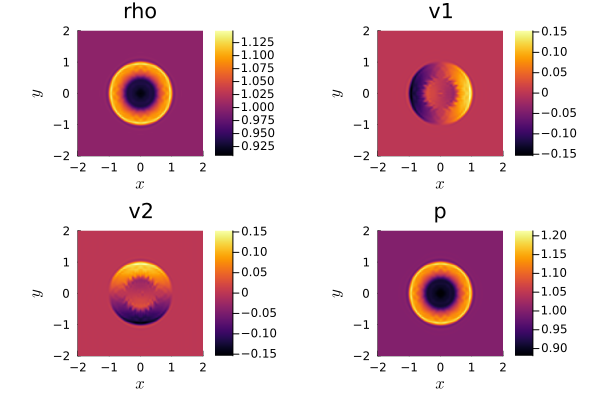
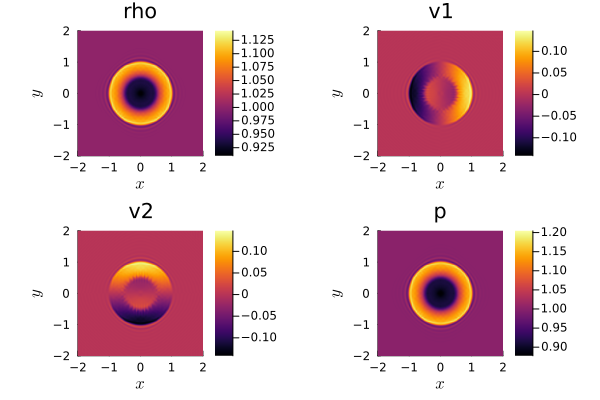
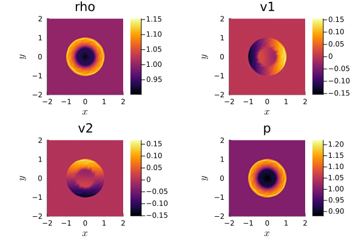
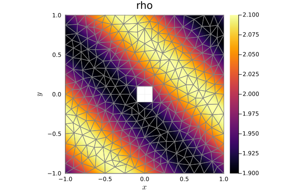

8: DG schemes via DGMulti solver


DGMulti is a DG solver that allows meshes with simplex elements. The basic idea and implementation of this solver is explained in section "Meshes". Here, we want to give some examples and a quick overview about the options with DGMulti.
We start with a simple example we already used in the tutorial about flux differencing. There, we implemented a simulation with initial_condition_weak_blast_wave for the 2D compressible Euler equations CompressibleEulerEquations2D and used the DG formulation with flux differencing using volume flux flux_ranocha and surface flux flux_lax_friedrichs.
Here, we want to implement the equivalent example, only now using the DGMulti solver instead of DGSEM.
using OrdinaryDiffEqLowStorageRKusing Trixiequations = CompressibleEulerEquations2D(1.4)initial_condition = initial_condition_weak_blast_waveinitial_condition_weak_blast_wave (generic function with 13 methods)To use the Gauss-Lobatto nodes again, we choose approximation_type=SBP() in the solver. Since we want to start with a Cartesian domain discretized with squares, we use the element type Quad().
dg = DGMulti(polydeg = 3, element_type = Quad(), approximation_type = SBP(), surface_flux = flux_lax_friedrichs, volume_integral = VolumeIntegralFluxDifferencing(flux_ranocha))cells_per_dimension = (32, 32)mesh = DGMultiMesh(dg, cells_per_dimension, # initial_refinement_level = 5 coordinates_min = (-2.0, -2.0), coordinates_max = (2.0, 2.0), periodicity = true)semi = SemidiscretizationHyperbolic(mesh, equations, initial_condition, dg, boundary_conditions = boundary_condition_periodic)tspan = (0.0, 0.4)ode = semidiscretize(semi, tspan)alive_callback = AliveCallback(alive_interval = 10)analysis_callback = AnalysisCallback(semi, interval = 100)callbacks = CallbackSet(analysis_callback, alive_callback);Run the simulation with the same time integration algorithm as before.
sol = solve(ode, RDPK3SpFSAL49(), abstol = 1.0e-6, reltol = 1.0e-6; callback = callbacks, ode_default_options()...);
────────────────────────────────────────────────────────────────────────────────────────────────────
Simulation running 'CompressibleEulerEquations2D' with DGMulti(polydeg=3)
────────────────────────────────────────────────────────────────────────────────────────────────────
#timesteps: 0 run time: 1.35200000e-06 s
Δt: 0.00000000e+00 └── GC time: 0.00000000e+00 s (0.000%)
sim. time: 0.00000000e+00 (0.000%) time/DOF/RHS: NaN s
PID: Inf s
#DOFs per field: 16384 alloc'd memory: 754.755 MiB
#elements: 1024 device memory: 0.000 MiB
Variable: rho rho_v1 rho_v2 rho_e_total
L2 error: 0.00000000e+00 0.00000000e+00 0.00000000e+00 0.00000000e+00
Linf error: 0.00000000e+00 0.00000000e+00 0.00000000e+00 0.00000000e+00
∑∂S/∂U ⋅ Uₜ : -8.96621432e-17
────────────────────────────────────────────────────────────────────────────────────────────────────
#timesteps: 10 │ Δt: 8.7780e-03 │ sim. time: 6.2340e-02 (15.585%) │ run time: 6.0323e+00 s
#timesteps: 20 │ Δt: 1.2423e-02 │ sim. time: 1.7291e-01 (43.228%) │ run time: 1.1032e+01 s
#timesteps: 30 │ Δt: 1.3713e-02 │ sim. time: 3.0607e-01 (76.518%) │ run time: 1.6041e+01 s
────────────────────────────────────────────────────────────────────────────────────────────────────
Simulation running 'CompressibleEulerEquations2D' with DGMulti(polydeg=3)
────────────────────────────────────────────────────────────────────────────────────────────────────
#timesteps: 37 run time: 1.95423914e+01 s
Δt: 9.70956341e-03 └── GC time: 1.44112504e+00 s (7.374%)
sim. time: 4.00000000e-01 (100.000%) time/DOF/RHS: 9.42628366e-08 s
PID: 3.54932820e-06 s
#DOFs per field: 16384 alloc'd memory: 776.555 MiB
#elements: 1024 device memory: 0.000 MiB
Variable: rho rho_v1 rho_v2 rho_e_total
L2 error: 6.13970273e-02 4.96516700e-02 4.96432290e-02 2.24583621e-01
Linf error: 2.61818335e-01 2.48009688e-01 2.47516950e-01 9.30969336e-01
∑∂S/∂U ⋅ Uₜ : -2.24504773e-03
────────────────────────────────────────────────────────────────────────────────────────────────────
────────────────────────────────────────────────────────────────────────────────────────────────────
Trixi.jl simulation finished. Final time: 0.4 Time steps: 37 (accepted), 37 (total)
────────────────────────────────────────────────────────────────────────────────────────────────────using Plotspd = PlotData2D(sol)plot(pd)
plot(pd["rho"])plot!(getmesh(pd))
This simulation is not as fast as the equivalent with TreeMesh since no special optimizations for quads (for instance tensor product structure) have been implemented. Figure 4 in "Efficient implementation of modern entropy stable and kinetic energy preserving discontinuous Galerkin methods for conservation laws" (2021) provides a nice runtime comparison between the different mesh types. On the other hand, the functions are more general and thus we have more option we can choose from.
Simulation with Gauss nodes
For instance, we can change the approximation type of our simulation.
using OrdinaryDiffEqLowStorageRKusing Trixiequations = CompressibleEulerEquations2D(1.4)initial_condition = initial_condition_weak_blast_waveinitial_condition_weak_blast_wave (generic function with 13 methods)We now use Gauss nodes instead of Gauss-Lobatto nodes which can be done for the element types Quad() and Hex(). Therefore, we set approximation_type=GaussSBP(). Alternatively, we can use a modal approach using the approximation type Polynomial().
dg = DGMulti(polydeg = 3, element_type = Quad(), approximation_type = GaussSBP(), surface_flux = flux_lax_friedrichs, volume_integral = VolumeIntegralFluxDifferencing(flux_ranocha))cells_per_dimension = (32, 32)mesh = DGMultiMesh(dg, cells_per_dimension, # initial_refinement_level = 5 coordinates_min = (-2.0, -2.0), coordinates_max = (2.0, 2.0), periodicity = true)semi = SemidiscretizationHyperbolic(mesh, equations, initial_condition, dg, boundary_conditions = boundary_condition_periodic)tspan = (0.0, 0.4)ode = semidiscretize(semi, tspan)alive_callback = AliveCallback(alive_interval = 10)analysis_callback = AnalysisCallback(semi, interval = 100)callbacks = CallbackSet(analysis_callback, alive_callback);sol = solve(ode, RDPK3SpFSAL49(); abstol = 1.0e-6, reltol = 1.0e-6, ode_default_options()..., callback = callbacks);
────────────────────────────────────────────────────────────────────────────────────────────────────
Simulation running 'CompressibleEulerEquations2D' with DGMulti(polydeg=3)
────────────────────────────────────────────────────────────────────────────────────────────────────
#timesteps: 0 run time: 1.24300000e-06 s
Δt: 0.00000000e+00 └── GC time: 0.00000000e+00 s (0.000%)
sim. time: 0.00000000e+00 (0.000%) time/DOF/RHS: NaN s
PID: Inf s
#DOFs per field: 16384 alloc'd memory: 946.707 MiB
#elements: 1024 device memory: 0.000 MiB
Variable: rho rho_v1 rho_v2 rho_e_total
L2 error: 3.68710966e-16 1.15322636e-17 1.10218146e-17 7.56862825e-16
Linf error: 8.88178420e-16 1.66533454e-16 1.38777878e-16 2.22044605e-15
∑∂S/∂U ⋅ Uₜ : -1.01025793e-01
────────────────────────────────────────────────────────────────────────────────────────────────────
#timesteps: 10 │ Δt: 5.0605e-03 │ sim. time: 3.3459e-02 (8.365%) │ run time: 6.3120e+00 s
#timesteps: 20 │ Δt: 8.8102e-03 │ sim. time: 1.0552e-01 (26.380%) │ run time: 1.2693e+01 s
#timesteps: 30 │ Δt: 1.0515e-02 │ sim. time: 2.0379e-01 (50.947%) │ run time: 1.9025e+01 s
#timesteps: 40 │ Δt: 1.1014e-02 │ sim. time: 3.1189e-01 (77.973%) │ run time: 2.5366e+01 s
────────────────────────────────────────────────────────────────────────────────────────────────────
Simulation running 'CompressibleEulerEquations2D' with DGMulti(polydeg=3)
────────────────────────────────────────────────────────────────────────────────────────────────────
#timesteps: 48 run time: 3.04701277e+01 s
Δt: 1.05335444e-02 └── GC time: 1.88519094e+00 s (6.187%)
sim. time: 4.00000000e-01 (100.000%) time/DOF/RHS: 3.14737815e-07 s
PID: 4.27430037e-06 s
#DOFs per field: 16384 alloc'd memory: 1122.913 MiB
#elements: 1024 device memory: 0.000 MiB
Variable: rho rho_v1 rho_v2 rho_e_total
L2 error: 6.10354126e-02 4.94109556e-02 4.94109556e-02 2.23252052e-01
Linf error: 2.58968304e-01 2.43227074e-01 2.43227074e-01 9.39281101e-01
∑∂S/∂U ⋅ Uₜ : -2.32263435e-03
────────────────────────────────────────────────────────────────────────────────────────────────────
────────────────────────────────────────────────────────────────────────────────────────────────────
Trixi.jl simulation finished. Final time: 0.4 Time steps: 48 (accepted), 48 (total)
────────────────────────────────────────────────────────────────────────────────────────────────────using Plotspd = PlotData2D(sol)plot(pd)
Simulation with triangular elements
Also, we can set another element type. We want to use triangles now.
using OrdinaryDiffEqLowStorageRKusing Trixiequations = CompressibleEulerEquations2D(1.4)initial_condition = initial_condition_weak_blast_waveinitial_condition_weak_blast_wave (generic function with 13 methods)Since there is no direct equivalent to Gauss-Lobatto nodes on triangles, the approximation type SBP() now uses Gauss-Lobatto nodes on faces and special nodes in the interior of the triangular. More details can be found in the documentation of StartUpDG.jl.
dg = DGMulti(polydeg = 3, element_type = Tri(), approximation_type = SBP(), surface_flux = flux_lax_friedrichs, volume_integral = VolumeIntegralFluxDifferencing(flux_ranocha))cells_per_dimension = (32, 32)mesh = DGMultiMesh(dg, cells_per_dimension, # initial_refinement_level = 5 coordinates_min = (-2.0, -2.0), coordinates_max = (2.0, 2.0), periodicity = true)semi = SemidiscretizationHyperbolic(mesh, equations, initial_condition, dg, boundary_conditions = boundary_condition_periodic)tspan = (0.0, 0.4)ode = semidiscretize(semi, tspan)alive_callback = AliveCallback(alive_interval = 10)analysis_callback = AnalysisCallback(semi, interval = 100)callbacks = CallbackSet(analysis_callback, alive_callback);sol = solve(ode, RDPK3SpFSAL49(); abstol = 1.0e-6, reltol = 1.0e-6, ode_default_options()..., callback = callbacks);
────────────────────────────────────────────────────────────────────────────────────────────────────
Simulation running 'CompressibleEulerEquations2D' with DGMulti(polydeg=3)
────────────────────────────────────────────────────────────────────────────────────────────────────
#timesteps: 0 run time: 1.58200000e-06 s
Δt: 0.00000000e+00 └── GC time: 0.00000000e+00 s (0.000%)
sim. time: 0.00000000e+00 (0.000%) time/DOF/RHS: NaN s
PID: Inf s
#DOFs per field: 30720 alloc'd memory: 940.167 MiB
#elements: 2048 device memory: 0.000 MiB
Variable: rho rho_v1 rho_v2 rho_e_total
L2 error: 0.00000000e+00 0.00000000e+00 0.00000000e+00 0.00000000e+00
Linf error: 0.00000000e+00 0.00000000e+00 0.00000000e+00 0.00000000e+00
∑∂S/∂U ⋅ Uₜ : -7.93719284e-03
────────────────────────────────────────────────────────────────────────────────────────────────────
#timesteps: 10 │ Δt: 6.6032e-03 │ sim. time: 4.5035e-02 (11.259%) │ run time: 1.0399e+01 s
#timesteps: 20 │ Δt: 1.0468e-02 │ sim. time: 1.3542e-01 (33.855%) │ run time: 2.0081e+01 s
#timesteps: 30 │ Δt: 1.2067e-02 │ sim. time: 2.5015e-01 (62.537%) │ run time: 2.9759e+01 s
#timesteps: 40 │ Δt: 1.2626e-02 │ sim. time: 3.7410e-01 (93.525%) │ run time: 3.9337e+01 s
────────────────────────────────────────────────────────────────────────────────────────────────────
Simulation running 'CompressibleEulerEquations2D' with DGMulti(polydeg=3)
────────────────────────────────────────────────────────────────────────────────────────────────────
#timesteps: 43 run time: 4.22800235e+01 s
Δt: 5.25387658e-04 └── GC time: 3.25653757e+00 s (7.702%)
sim. time: 4.00000000e-01 (100.000%) time/DOF/RHS: 1.66169840e-07 s
PID: 3.52837188e-06 s
#DOFs per field: 30720 alloc'd memory: 856.858 MiB
#elements: 2048 device memory: 0.000 MiB
Variable: rho rho_v1 rho_v2 rho_e_total
L2 error: 6.07273868e-02 4.91888814e-02 4.91932241e-02 2.22135400e-01
Linf error: 2.69688113e-01 2.45715208e-01 2.45652889e-01 9.33595546e-01
∑∂S/∂U ⋅ Uₜ : -1.95899475e-03
────────────────────────────────────────────────────────────────────────────────────────────────────
────────────────────────────────────────────────────────────────────────────────────────────────────
Trixi.jl simulation finished. Final time: 0.4 Time steps: 43 (accepted), 43 (total)
────────────────────────────────────────────────────────────────────────────────────────────────────using Plotspd = PlotData2D(sol)plot(pd)
plot(pd["rho"])plot!(getmesh(pd))
Triangular meshes on non-Cartesian domains
To use triangular meshes on a non-Cartesian domain, Trixi.jl uses the package StartUpDG.jl. The following example is based on elixir_euler_triangulate_pkg_mesh.jl and uses a pre-defined mesh from StartUpDG.jl.
using OrdinaryDiffEqLowStorageRKusing TrixiWe want to simulate the smooth initial condition initial_condition_convergence_test with source terms source_terms_convergence_test for the 2D compressible Euler equations.
equations = CompressibleEulerEquations2D(1.4)initial_condition = initial_condition_convergence_testsource_terms = source_terms_convergence_testsource_terms_convergence_test (generic function with 10 methods)We create the solver DGMulti with triangular elements (Tri()) as before.
dg = DGMulti(polydeg = 3, element_type = Tri(), approximation_type = Polynomial(), surface_flux = flux_lax_friedrichs, volume_integral = VolumeIntegralFluxDifferencing(flux_ranocha))┌──────────────────────────────────────────────────────────────────────────────────────────────────┐
│ DG{Float64} │
│ ═══════════ │
│ basis: …………………………………………………………………………… RefElemData{N=3, Polynomial, Tri}. │
│ mortar: ………………………………………………………………………… nothing │
│ surface integral: ……………………………………………… SurfaceIntegralWeakForm │
│ │ surface flux: …………………………………………………… FluxLaxFriedrichs(max_abs_speed) │
│ volume integral: ………………………………………………… VolumeIntegralFluxDifferencing │
│ │ volume flux: ……………………………………………………… flux_ranocha │
└──────────────────────────────────────────────────────────────────────────────────────────────────┘StartUpDG.jl provides for instance a pre-defined Triangulate geometry for a rectangular domain with hole RectangularDomainWithHole. Other pre-defined Triangulate geometries are e.g., SquareDomain, Scramjet, and CircularDomain.
meshIO = StartUpDG.triangulate_domain(StartUpDG.RectangularDomainWithHole());The pre-defined Triangulate geometry in StartUpDG has integer boundary tags. With DGMultiMesh we assign boundary faces based on these integer boundary tags and create a mesh compatible with Trixi.jl.
mesh = DGMultiMesh(dg, meshIO, Dict(:outer_boundary => 1, :inner_boundary => 2))┌──────────────────────────────────────────────────────────────────────────────────────────────────┐
│ DGMultiMesh{2, Trixi.Affine}, │
│ ══════════════════════════════ │
│ number of elements: ………………………………………… 598 │
│ number of boundaries: …………………………………… 2 │
│ │ nfaces on outer_boundary: …………………… 52 │
│ │ nfaces on inner_boundary: …………………… 4 │
└──────────────────────────────────────────────────────────────────────────────────────────────────┘boundary_condition_convergence_test = BoundaryConditionDirichlet(initial_condition)boundary_conditions = (; outer_boundary = boundary_condition_convergence_test, inner_boundary = boundary_condition_convergence_test)semi = SemidiscretizationHyperbolic(mesh, equations, initial_condition, dg, source_terms = source_terms, boundary_conditions = boundary_conditions)tspan = (0.0, 0.2)ode = semidiscretize(semi, tspan)alive_callback = AliveCallback(alive_interval = 20)analysis_callback = AnalysisCallback(semi, interval = 200)callbacks = CallbackSet(alive_callback, analysis_callback);sol = solve(ode, CarpenterKennedy2N54(williamson_condition = false); dt = 0.5 * estimate_dt(mesh, dg), ode_default_options()..., callback = callbacks);
────────────────────────────────────────────────────────────────────────────────────────────────────
Simulation running 'CompressibleEulerEquations2D' with DGMulti(polydeg=3)
────────────────────────────────────────────────────────────────────────────────────────────────────
#timesteps: 0 run time: 1.09200000e-06 s
Δt: 1.49245207e-03 └── GC time: 0.00000000e+00 s (0.000%)
sim. time: 0.00000000e+00 (0.000%) time/DOF/RHS: NaN s
PID: Inf s
#DOFs per field: 5980 alloc'd memory: 1308.931 MiB
#elements: 598 device memory: 0.000 MiB
Variable: rho rho_v1 rho_v2 rho_e_total
L2 error: 3.93036845e-07 3.93036845e-07 3.93036845e-07 1.55064245e-06
Linf error: 4.47141181e-06 4.47141181e-06 4.47141181e-06 1.47933676e-05
∑∂S/∂U ⋅ Uₜ : -1.23444983e-02
────────────────────────────────────────────────────────────────────────────────────────────────────
#timesteps: 20 │ Δt: 1.4925e-03 │ sim. time: 2.9849e-02 (14.925%) │ run time: 7.5670e-01 s
#timesteps: 40 │ Δt: 1.4925e-03 │ sim. time: 5.9698e-02 (29.849%) │ run time: 1.5057e+00 s
#timesteps: 60 │ Δt: 1.4925e-03 │ sim. time: 8.9547e-02 (44.774%) │ run time: 2.2522e+00 s
#timesteps: 80 │ Δt: 1.4925e-03 │ sim. time: 1.1940e-01 (59.698%) │ run time: 2.9968e+00 s
#timesteps: 100 │ Δt: 1.4925e-03 │ sim. time: 1.4925e-01 (74.623%) │ run time: 3.7416e+00 s
#timesteps: 120 │ Δt: 1.4925e-03 │ sim. time: 1.7909e-01 (89.547%) │ run time: 4.4866e+00 s
────────────────────────────────────────────────────────────────────────────────────────────────────
Trixi.jl simulation finished. Final time: 0.2 Time steps: 135 (accepted), 135 (total)
────────────────────────────────────────────────────────────────────────────────────────────────────
────────────────────────────────────────────────────────────────────────────────────────────────────
Simulation running 'CompressibleEulerEquations2D' with DGMulti(polydeg=3)
────────────────────────────────────────────────────────────────────────────────────────────────────
#timesteps: 135 run time: 5.04609850e+00 s
Δt: 1.14223386e-05 └── GC time: 0.00000000e+00 s (0.000%)
sim. time: 2.00000000e-01 (100.000%) time/DOF/RHS: 8.99562495e-07 s
PID: 1.24662820e-06 s
#DOFs per field: 5980 alloc'd memory: 1316.244 MiB
#elements: 598 device memory: 0.000 MiB
Variable: rho rho_v1 rho_v2 rho_e_total
L2 error: 4.43758196e-06 3.71131539e-06 4.42671632e-06 9.85291868e-06
Linf error: 6.10809392e-05 4.53698773e-05 6.62331386e-05 1.25625351e-04
∑∂S/∂U ⋅ Uₜ : -1.03046341e-02
────────────────────────────────────────────────────────────────────────────────────────────────────using Plotspd = PlotData2D(sol)plot(pd["rho"])plot!(getmesh(pd))
For more information, please have a look in the StartUpDG.jl documentation.
Package versions
These results were obtained using the following versions.
using InteractiveUtilsversioninfo()using PkgPkg.status(["Trixi", "StartUpDG", "OrdinaryDiffEqLowStorageRK", "Plots"], mode = PKGMODE_MANIFEST)Julia Version 1.10.12
Commit d93beab124c (2026-08-15 10:29 UTC)
Build Info:
Official https://julialang.org/ release
Platform Info:
OS: Linux (x86_64-linux-gnu)
CPU: 4 × AMD EPYC 7763 64-Core Processor
WORD_SIZE: 64
LIBM: libopenlibm
LLVM: libLLVM-15.0.7 (ORCJIT, znver3)
Threads: 1 default, 0 interactive, 1 GC (on 4 virtual cores)
Environment:
JULIA_PKG_SERVER_REGISTRY_PREFERENCE = eager
Status `~/work/Trixi.jl/Trixi.jl/docs/Manifest.toml`
[b0944070] OrdinaryDiffEqLowStorageRK v3.4.0
[91a5bcdd] Plots v1.41.7
[472ebc20] StartUpDG v1.4.1
[a7f1ee26] Trixi v0.17.6-DEV `~/work/Trixi.jl/Trixi.jl`This page was generated using Literate.jl.